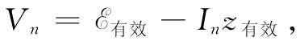

连接到一个含有某种复杂的阻抗互连电路中，如图22-15（a）所示。由于所有从基尔霍夫法则获得的方程都是线性的，因而当解出流经该发电机的电流I时，我们就会得出结论：I与
成正比。即可以写成
连接到一个含有某种复杂的阻抗互连电路中，如图22-15（a）所示。由于所有从基尔霍夫法则获得的方程都是线性的，因而当解出流经该发电机的电流I时，我们就会得出结论：I与
成正比。即可以写成假定把一部发电机
连接到一个含有某种复杂的阻抗互连电路中，如图22-15（a）所示。由于所有从基尔霍夫法则获得的方程都是线性的，因而当解出流经该发电机的电流I时，我们就会得出结论：I与
成正比。即可以写成

现在式中z有效
是某个复数，是该电路中所有元件的代数函数（如果该电路除了图中所示的那部发电机之外没有其他发电机，那么就不会有与
无关的任何附加项）。但这恰好就是我们应写出的关于图22-15（b）的电路方程。只要我们仅对a和b两端点左侧
所发生的情况感兴趣，则图22-15的两个电路就是等效
的。因此，我们能够做出一个普遍陈述：无源元件的任何
二端网络都可以由一个单独阻抗z有效
来代替而不改变电路中其余部分的电流和电压。当然，这个陈述的内容不过是来自基尔霍夫法则——而最终来自麦克斯韦方程组的线性性质的一种表示。
| 图22-15 任何无源元件的二端网络都相当于一个有效阻抗 | 图22-16 任何二端网络都可以由串联一个阻抗的发电机来代替 |
这一概念可推广至同时含有若干部发电机和若干个阻抗的电路。假定我们是“从其中某一阻抗的观点”来看这样一个电路，而这个阻抗被称为zn ，如图22-16（a）所示。要是必须对整个电路的方程求解，则会发现两端点a和b之间的电压Vn 是In 的线性函数，我们可以把它写成
Vn =A-BIn ， （22.22）
式中A和B依赖于电路中端点左侧的发电机和阻抗。例如，对于图22-13的那种电路，我们求得V1 =I1 z1 。这可以写成［通过对式（22.20）的重新布置］：
于是，把这一方程与有关阻抗z1 的方程，即V1 =I1 z1 ，互相结合就可获得全部的解，或者在一般情况下，通过将方程式（22.22）与
Vn =In zn
相结合而获得全部的解。
现在若考虑把zn 连接至由发电机和阻抗构成的简单串联电路，如图22-16（b）所示，则与式（22.22）相应的方程为

只要我们令 ，而z有效 =B，上式与式（22.22）完全相同。因此，若我们只对于在a和b两端点右侧 所发生的情况感兴趣，则图22-16的那个任意电路始终可以由发电机与阻抗串联而成的等效结合体来代替。